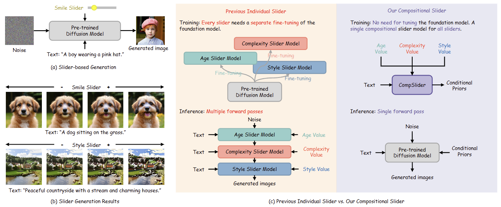
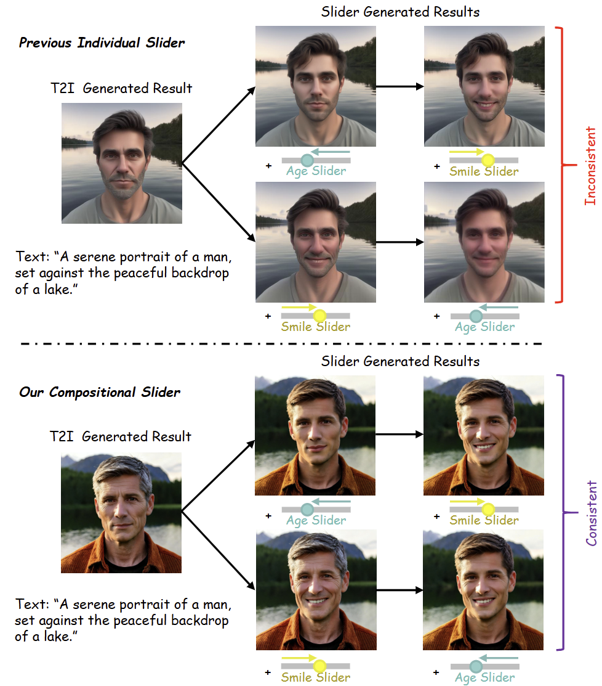
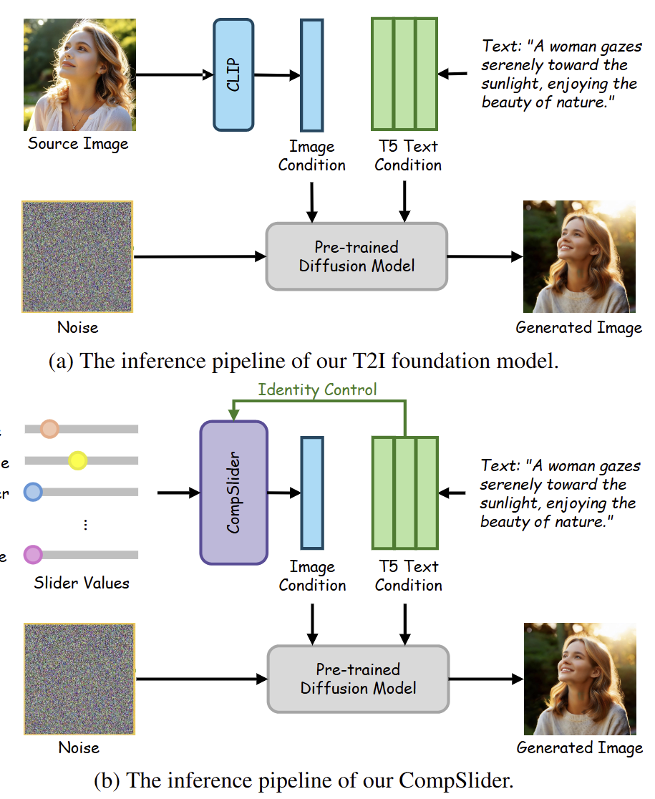
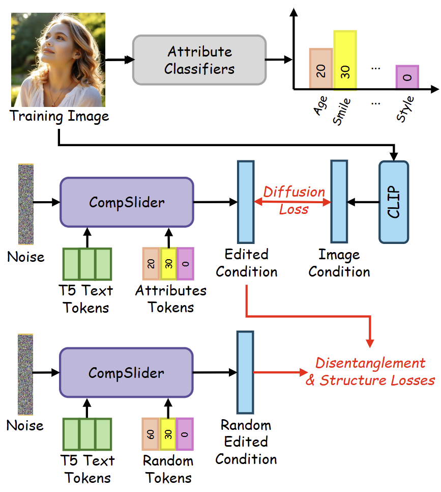
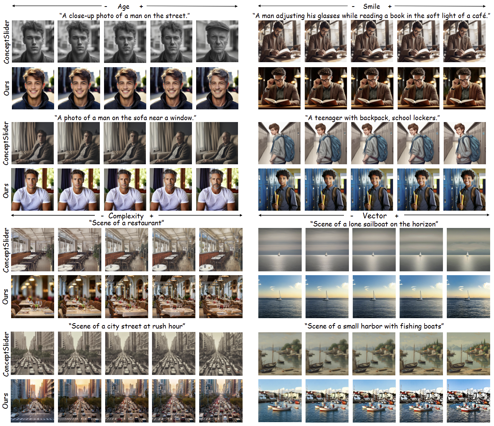
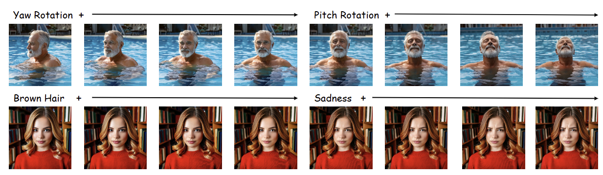
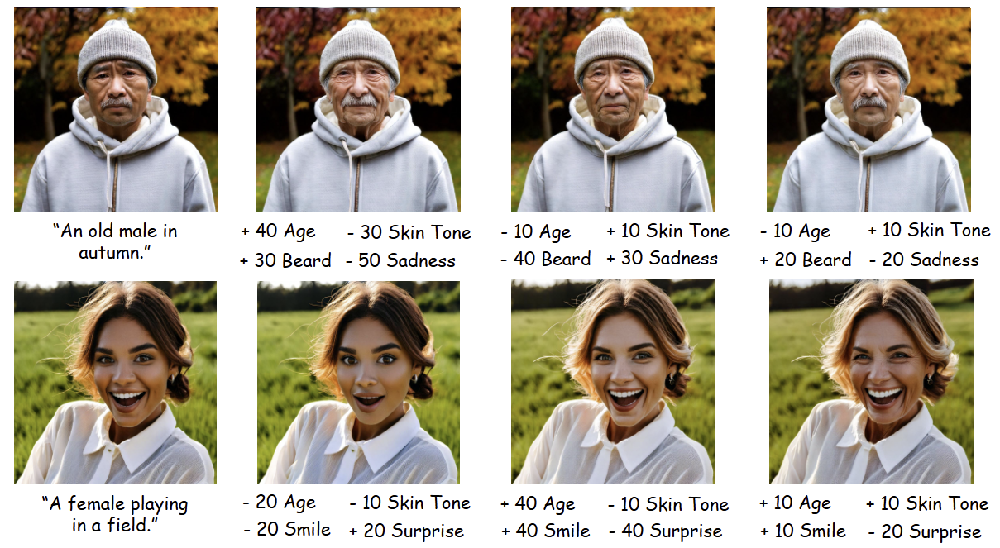

CompSlider: Compositional Slider for Disentangled Multiple-Attribute Image Generation
1 University at Buffalo 2 Adobe Inc. (ASML)
{ zixinzhu, jsyuan }@buffalo.edu { kduarte, mrizve, chengyuanx, kalarot }@adobe.com


In text-to-image (T2I) generation, achieving fine-grained control over attributes - such as age or smile - remains challenging, even with detailed text prompts. Slider-based methods offer a solution for precise control of image attributes. Existing approaches typically train individual adapter for each attribute separately, overlooking the entanglement among multiple attributes. As a result, interference occurs among different attributes, preventing precise control of multiple attributes together. To address this challenge, we aim to disentangle multiple attributes in slider-based generation to enbale more reliable and independent attribute manipulation. Our approach, CompSlider, can generate a conditional prior for the T2I foundation model to control multiple attributes simultaneously. Furthermore, we introduce novel disentanglement and structure losses to compose multiple attribute changes while maintaining structural consistency within the image. Since CompSlider operates in the latent space of the conditional prior and does not require retraining the foundation model, it reduces the computational burden for both training and inference. We evaluate our approach on a variety of image attributes and highlight its generality by extending to video generation.





@inproceedings{ZhuICCV2025CompSlider,
title = {CompSlider: Compositional Slider for Disentangled Multiple-Attribute Image Generation},
author = {Zixin Zhu and Kevin Duarte and Mamshad Nayeem Rizve and Chengyuan Xu and Ratheesh Kalarot and Junsong Yuan},
booktitle = {Proceedings of the IEEE/CVF International Conference on Computer Vision (ICCV)},
year = {2025}
}